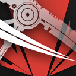

收割者 Reaper
收割者（Reaper）是近卫职业中以范围攻击为核心的分支，擅长使用巨型镰刀对面前所有敌人发动覆盖打击。收割者无法依赖外部治疗恢复伤势，但每一次攻击都能从敌人的溃败中汲取力量，转化为自身的续航能力。这种特性使其在混战中表现出色，在快速清理杂兵的同时，精准把控节奏以维持战线。
收割者可以在孤立无援的战场环境持续输出，通过攻击回血的机制在持久战中保持战斗力，作为高效的清场者，收割者能在短时间内压制靠近的密集敌群。
收割者特性表
| 近卫等级 | 特性 |
| 3rd | 镰刃风暴、收割循环 |
| 7th | 横扫如风 |
| 10th | 生死回响 |
| 15th | 横扫切裂 |
| 18th | 毁形残骨 |
3级：镰刃风暴 Scythe Storm
作为一名收割者，你获得以下特性：
巨镰精通。你选择一把精通词条为横扫或散射的武器，并获得其精通。
横扫镰刃。若你未穿戴重甲，则你应用横扫或散射精通词条时可以额外攻击至多两名而非一名符合条件的敌人。你必须为原本的攻击以及两次追加攻击都分别选取不同的目标。
此外，你习得战技：快速切割。
|
 |
快速切割 | Rapid Cutting攻击动作 消耗 1 技力
|
 立即
立即你可以在执行攻击动作时消耗1点技力来发动此战技。这次攻击动作中你可以额外发动一次攻击，且这次攻击可以应用横扫或散射精通词条而不受到其每回合一次的限制。
3级：收割循环 Reaping Loop
你已习得了孤立作战的真谛，尽管这是一把双刃剑。每次进行先攻检定时，你决定是否获得下述这些效果，持续到战斗结束。
吸收。你每次以具有横扫或散射精通的武器发动攻击时，可以同时为自身恢复生命值，数值等同此次攻击检定中加入的属性调整值。此特性在一回合内最多可以被触发的次数等同你的体质属性调整值。
禁疗。这场战斗中你无法被魔法效应或任何职业特性治疗，除非该治疗来源于你的近卫职业特性，或者你为这次治疗消耗了近卫生命骰。
7级：横扫如风 Wind Sweeping
你懂得如何将手中武器的攻击效率最大化，你习得下述特性：
旋斩横扫。当你执行攻击动作时，你可以替换其中一次攻击为旋斩横扫。你触及范围内的每个所选生物必须通过敏捷豁免（DC=8+你熟练加值+你攻击属性调整值），否则受到你武器原本伤害+1d10点挥砍伤害并倒地，成功则仅受半伤。你必须持用一把具有横扫精通或者散射精通的武器才能这么做。
此回合中，如果你曾消耗技力发动战技，则每消耗1点技力，旋斩横扫的额外挥砍伤害就增加1d10。
10级：生死回响 Vital Reverberations
你从最为深邃的生死之间领悟了战斗的真谛，你习得下述特性：
重盈。当你在一场战斗中首次陷入浴血时，你立即获得等同你近卫等级两倍的临时生命值。战斗结束后这些临时生命值如果仍在则消失。
此外，你习得战技：生死回响。
|
|
生死回响 | Vital Reverberations附赠动作 消耗 1 技力
|
你可以附赠动作并消耗1点技力来发动此战技。直到本回合结束前：你的触及范围增加5尺；你执行攻击动作时，可以额外发动一次武器攻击；你通过收割循环特性恢复的生命值翻倍。
15级：横扫切裂 Cleave Expertise
你对横扫战斗的应用出神入化。你习得下述特性：
移动横扫。你应用横扫或散射精通词条时，可以先进行移动，再对新位置触及范围内的目标应用横扫攻击。
横扫大师。每回合仅一次，当你应用横扫或散射精通词条时，你可以对主目标追加应用一个额外的精通词条，可以是：削弱、擦掠或拉近。
18级：毁形残骨 Fatal Mutilate
你使用武器攻击命中处于浴血期间的敌人时，你可尝试重创对方。目标需进行一次体质豁免（DC=8+你的熟练加值+你攻击属性调整值）。若豁免失败，目标将承受以下效果：
伤残Maimed。当目标执行攻击动作或多重攻击时，其只能发动一次攻击。
迟滞Sluggish。目标的速度减半，且AC-2。
此效果持续至目标恢复生命值或脱离浴血为止。
在任何目标失败于此次豁免后，你直至完成一次长休前都无法再次使用此特性。